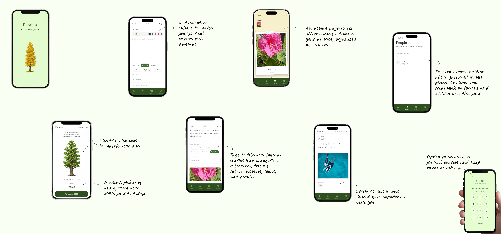

Parallax
A life-reflection journal organized around years, not days, so you can see not just what happened, but how you have changed.
Introduction
Parallax is a life-reflection journal built on a simple reframe: a life makes more sense as a sequence of years than as a stream of days. You do not log a Tuesday. You add to a year, and slowly the shape of a life comes into view.
I conceptualized, designed, and built it end to end: the concept, the information architecture, every word of the interface, the visual system, and the shipped app.
The challenge
We record what happened. We rarely see how we changed.
People document their lives constantly, yet those moments stay scattered across journals, photos, and notes. The tools are good at preserving the present. They rarely help anyone step back and see how their ideas, values, and sense of self have shifted over the years.
Most journals answer one question: what happened today? Parallax is built to answer a harder one: how have I changed?
Highlights
2 weeks
From concept to a fully functional, installed app.
Built with Claude Code
Designed and vibe-coded end to end, one person holding every role.
The constraint
A psychology-backed journal, without streaks or gamification.
Parallax is a mirror, not a lever.
The app is grounded in the psychology of self-distancing and narrative identity: we understand our lives by stepping back and forming a story from a few defining moments. That framing set a hard constraint. Behavior-change hooks like streaks, scores, reminders, and goals would undercut the very perspective the app exists to give.
So they were all cut. No streaks, no scores, no nudges. The restraint became the product. The words never nag or congratulate; the structure arranges rather than measures. What is left is a quiet space that trusts the reader to return on their own terms.
The app
Every screen, and what it does.

Key decisions
The year is the unit, not the day
Journals are usually structured by day. Parallax structures by year, navigated with a wheel picker from your birth year to today. Choosing the year as the top of the information architecture is what makes perspective possible, because a life is navigable as a sequence of years in a way it never is as ten thousand days.
A fixed, first-person taxonomy
Entries file under six tags: my people, my values, my ideas, my milestones, my feelings, my hobbies. A small, fixed vocabulary removes the burden of organizing memories and gently guides reflection. The first-person “my” turns a taxonomy into territory; the grammar of the labels does emotional work.
A voice that never pressures
The save action reads “Keep it,” not “Submit.” Prompts stay quiet: write it as you would remember it, where it belongs, who is in it. No exclamation marks, no streak-keeping, no congratulation. Every string was checked against the mirror-not-lever principle.
Structure that reveals a second axis
Because names are typed into entries, a People view emerges for free, gathering everyone written about and showing them across years. No separate data model, just a different read of the same tagged content. Importance emerges from recurrence, not ranking.
Outcome
A shipped app that keeps its promise of restraint.
Parallax is installed and running on a real device, submitted through EAS. The concept held its shape from first principle to build: the year-based structure, the first-person taxonomy, the handwriting-and-dot-grid writing space, the season-colored album, and the People view all made it through intact.
The restraint that felt risky early, no streaks and no nudges, turned out to be the point. It also reframed the usual cold-start problem: because you can pour in years of memory from 2016 or 2019 right away, the app is never empty on day one. It is as much about recovering the past as recording the present.